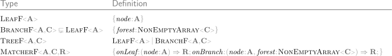
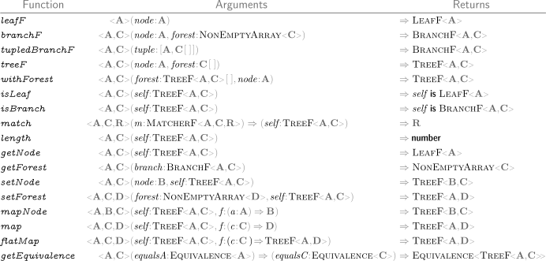
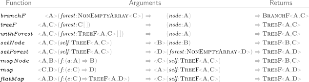
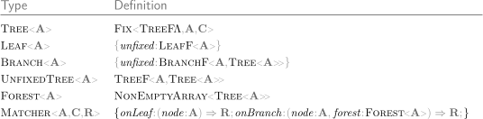
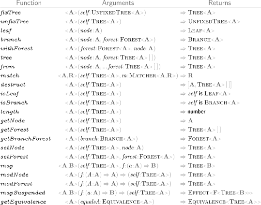
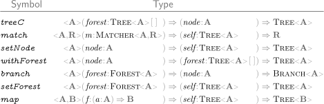

effect-tree - v1.0.18
Preparing search index...
src/README
effect-tree
Source
TreeF (src)
TreeF<A, C> Types
TreeF<A, C> Functions
Tree (src)
Tree<A> Types
Tree<A> Functions
TreeF (
src
)
TreeF<A, C> Types

TreeF<A, C> Functions

Some functions have curried versions:

Some require an Applicative instance for
F
:
Tree (
src
)
Tree<A> Types

Tree<A> Functions

Some functions have curried versions:

Some require an Applicative instance for
F
:
Settings
Member Visibility
Internal
Theme
OS
Light
Dark
On This Page
effect-
tree
Source
Tree
F (src)
Tree
F<
A,
C>
Types
Tree
F<
A,
C>
Functions
Tree (src)
Tree<
A>
Types
Tree<
A>
Functions
effect-tree - v1.0.18
Loading...